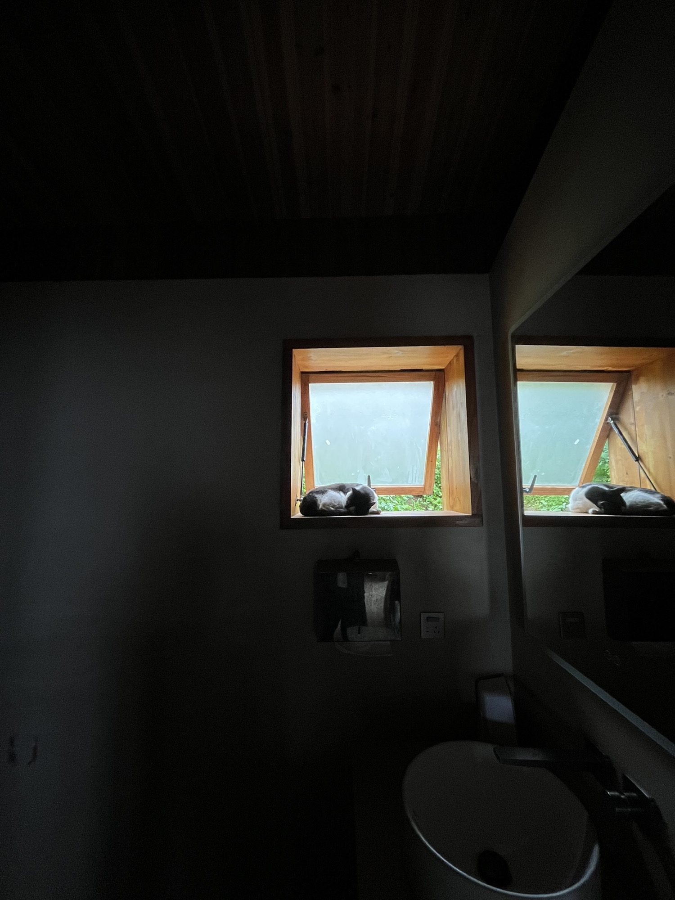
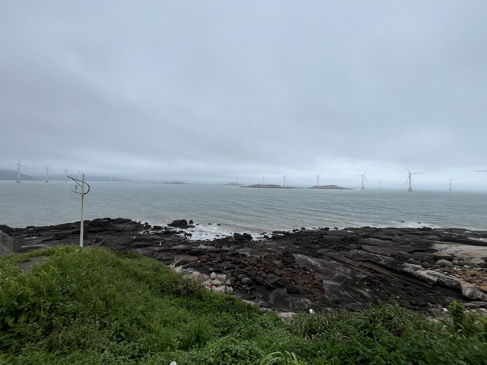
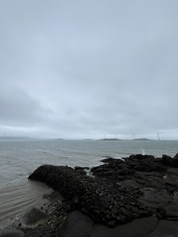
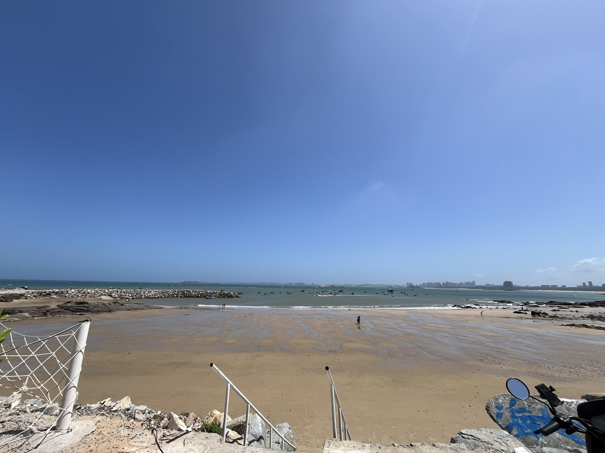
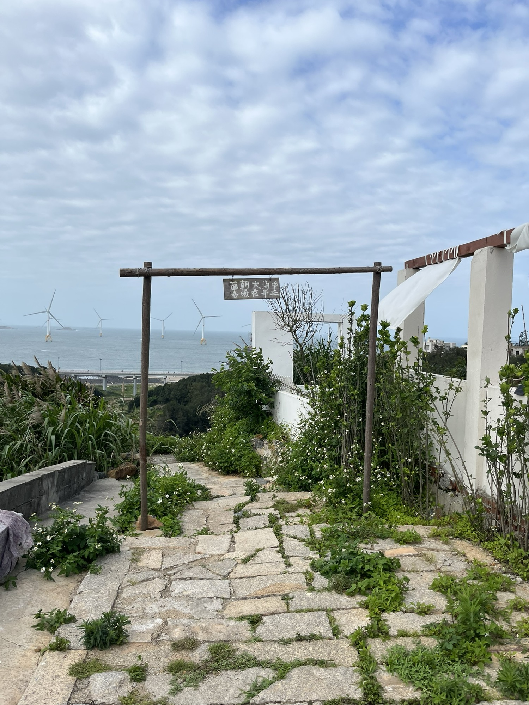
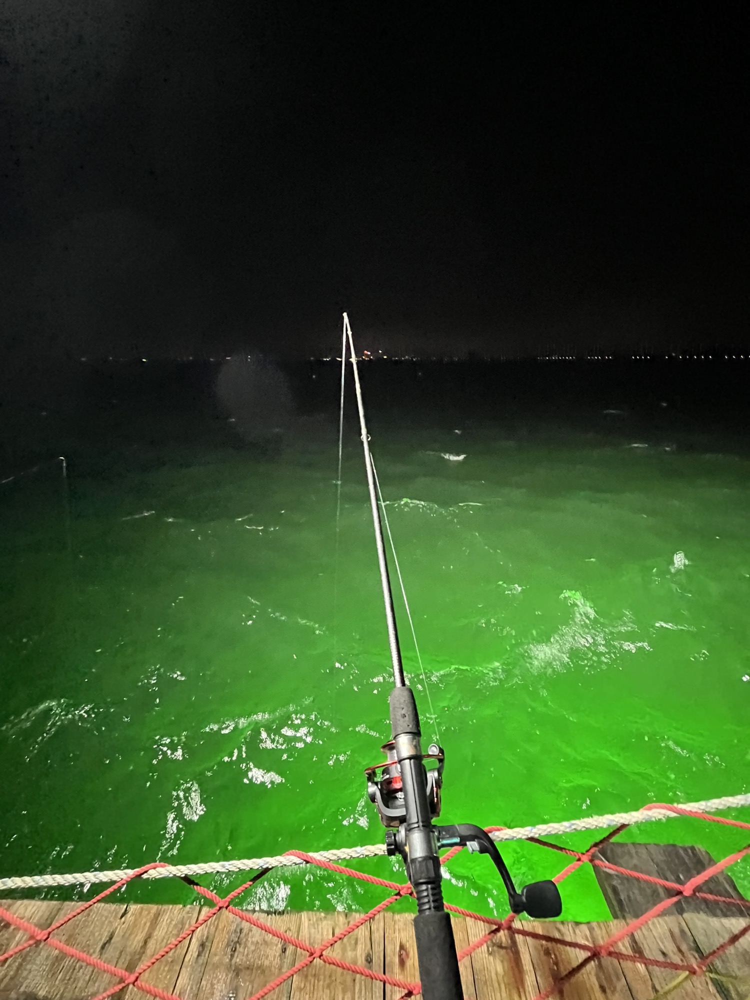
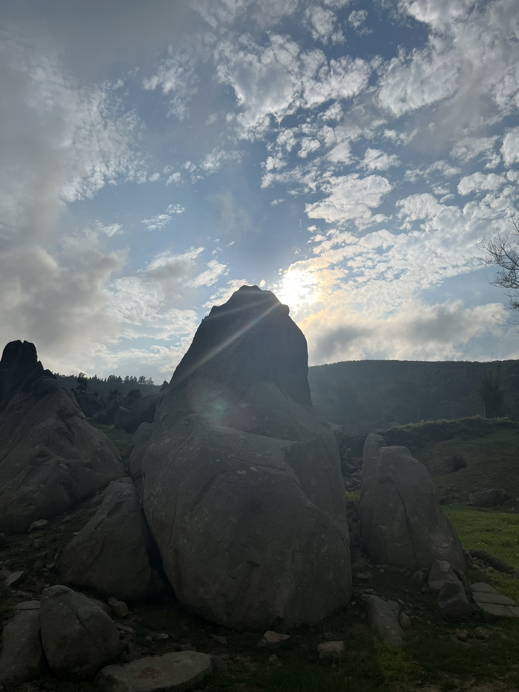
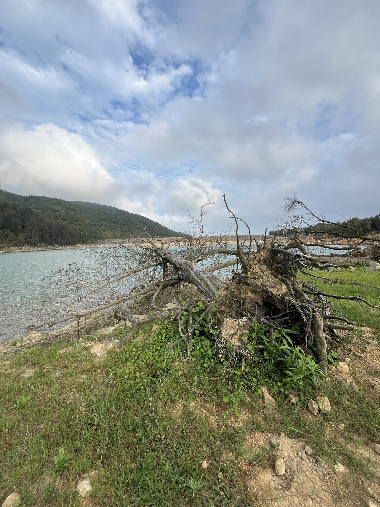
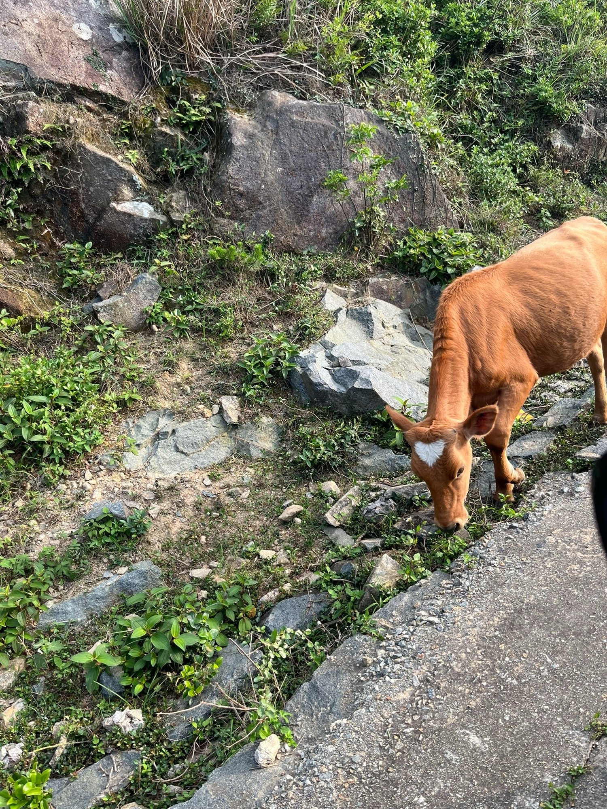

我人生第一次看见大海，却高兴不起来
大家好，我是 Chester，我想成为更好的自己！
<

,
,
,
,
,
,
,
,
>我人生第一次看见大海
过去好久了。我想谈谈我在福州平潭的GAP生活。6月份离开，截止到现在也有两个多月了，马上都三个月了。时间过得很快，我也在新的地方落下来了。但自那一天到现在，我没有一刻不想着平潭。我想到关于那里的一切——那些发生的事情，那些人，那些去过的地方，看过的风景，做过的每一件事，以及一切好的与坏的。
从五一先到深圳，然后突然转向平潭去做义工。其实这算是预谋已久的事。当时去平潭，只是在微信上搜索义工相关信息时偶然看到，动了心，来了平潭。
我相信缘分。人算不如天算——人有既定的目标，但有一部分，还是上天决定的。
谈论一件事的意义是很困难的，我们只能向后看，才能理解它。刚才临时起意，算是个契机，我就随手记录一下对平潭的感受。
平潭对我来说仍然是一个重要的回忆，也是一个转折点，至少从目前来看是这样。去平潭也是我人生第一次去福建，第一次长时间住在海边。这也完成了我小时候的一个愿望。当初那个面朝黄土的小孩子，家里院子四处抬头望去都是黄土。我站在山坡上，眺望能看到远处的庄稼和塑料大棚，还有一条流经的小河，能看到我家。向上看，是白云蓝天。那时候太阳不是很温柔，但对那时的我来说并不在意。
那一刻，还想不到深圳是那么遥远。对我来说，听过最远的城市是兰州、北京。深圳完全不可想象，我甚至不知道这两个地方的位置。我只知道海的味道来自玻璃海苔的广告——“爱的味道我知道”。那时候我一直想，住在海边的人是什么样的？
树木四季常青。这是我当时的想象。
直到我去了平潭，人生第一次看到了大海。无边无际的大海就在我眼前几百米处，我可以随手触摸它。但我确实已经没有少年时的好奇了。谈不上什么惊喜或激动。不是海不美。是我心里，已经没了能接住它的空地。也是在这二十多天里，我才明白，并不是生活在海边的人就一定幸福。
我羡慕那些会「刹车」的年轻人
我在那里看到了很多可能性，也看到了许多年轻人。我觉得确实是年轻人，比我刚毕业时的年龄还要小，有些才十几岁，刚成年左右。工作几年之后，我觉得自己半个身子都老了。但和这些年轻群体在一起，我看到了他们正在做我当年做不到的事。我刚毕业的时候，其实根本没想过接下来该干什么。因为接下来的事是既定的——去工作。我从来没有想过还能有别的选择。
我当时不知道还能做什么，没有认知，也没有信息来源，或者说根本就没去搜。我的日常认知是被规训好的：上学、谈恋爱、去工作，一直就是这样。所以当我看到现在的年轻人竟然知道什么是GAP、什么是义工，能通过以工代宿的方式去旅行，我其实挺羡慕的。如果我也有这样一份机会，在马上投入工作的期间来一次紧急刹车，也许我的人生会突然改变，走向一条完全不同的路。但人生哪有那么多完美和后悔？
闲下来，我居然有罪恶感
在平潭二十多天的停留，是我这一生截至目前最长的一次旅行。
整个过程中，我其实有一种东亚式的罪恶感，尤其是我们老一辈思想下的那种闲暇罪恶感。我没上班，感觉特别有罪，好像什么事都没做，很难真正放松下来。有一种莫名的压力压迫着我。有人会说“你放松点”，但我怎么放松？我知道要放松，可就是放松不了。你越让我放松，我反而越紧张，越压迫自己。我会有这种东亚式的、对空闲的罪恶感——我怎么能闲得下来？而且还有那么多隐形的竞争者在盯着我——想象了很多竞争者。
对，我一直在卷自己、卷别人，也就是别人说的“内卷”。
我见到了刚毕业的，也有没读完书就出来玩的，在工作期间抽身出来的。而我当时很迷茫。整个过程里，我也没主动找工作，不知道自己在干什么。
我想完全地放松自己，但我没做到；我想努力，却又一塌糊涂，毫无成效；我想做好自己，却没能恰如其分地做到。我会陷入一种莫名的自责，觉得自己好像什么都做错了。当时有种非常凌乱的感觉。
但我依然学会了很多东西。
我重新学会了拍照。以前觉得拍照不太好意思，后来拍了几张，重新体会到了拍照的乐趣。
我还找回了与人深度交流的快乐。我的工作环境里几乎没有这样的对话——交流大多是工作性质的。但在平潭，我和许多比我年轻的人交谈，看见了每个人的故事，这对我很有益处。我喜欢深度交流。每个人都按照既定路线走，但我始终看不清自己的路：我不好不坏，坏得不够彻底，好得也不够彻底；整天忙忙碌碌，像滑西瓜皮一样，滑到哪儿算哪儿，所有目标都是错乱的。
在平潭的那段时间，我几乎把所有景点都转了一遍。但我并没有从中获得太多乐趣，很奇怪。小时候无比向往的地方，长大后却没什么感觉。我很难从平凡事物中感受到特别的美好——这是我丧失的能力，但我一直在学习。那些风景真的很美，但我怎么看不到呢？我不明白为什么他们会对蓝眼泪那么热情。就算蓝眼泪放在我眼前，我也无动于衷。开车的时候，我一直在寻找某个东西，想要得到什么，却又说不清楚。
那段时间我开了三千多公里，可能比很多本地人去的地方还多。我感受到了美好，尤其喜欢那间民宿。我总是会怀念它。回忆对我来说是最珍贵的礼物。即使是糟糕的事，我也会去回忆。在平潭那二十多天，我是非常开心的。虽然对未来没有清晰图景，当时还在犹豫要不要去西安，或其他地方。想去西安只是因为离家近，去其他地方则是因为没有不去的理由。
我不知道为什么要离开。晚晚说一线城市有更好的发展，我听进去了，但我仍缺少一个锚点，一个让我最终决定去另一个城市的关键支点。最后我来到了深圳。我特别想念那间民宿，它的名字、环境、氛围都很好。虽然彼此有些摩擦，但人生哪有十全十美？有摩擦是正常的。
我们在那里吃了好多次烧烤，也一起打球、打台球、吃饭，一群人出去看风景。不得不承认，那段时光真的非常好。回望现在，这些记忆就是最好的宝藏，是最美好的存在。
每天喝着免费的咖啡，看着落日和美景，我觉得在那里发生了太多事。我有时会细细回想、琢磨。每次想起一件事，就像又回到了平潭，那种奇妙的感觉——好像一切并未过去，而是持续影响着未来。
也是后来才明白：真正让我开心的，从来不是风景，是风景里的人。
车陷进沙滩的那个下午
那段日子，也不全是温柔。人生第一次把车陷进沙滩里。其实我当时挺愚蠢的，根本没想到会发生这种事。结果闹得挺大。那个沙滩是村民自己围起来的，要收费五千块。他们叫了拖车进来，但拖车也陷进去一点，最后才把我拉出来。村民还想闹事，警察来了之后调解，我才得以脱身。
在整个事故中，我确实措手不及。从道理上说我有点理亏，但我觉得对方也太刁钻了。那地方其实没什么经济价值，我也没破坏什么。最让我感激的是那对拖车夫妇。从他们的穿着能看出，他们是为生活拼搏的人。作为第三方，完全没必要站在我这边，却一直在维护我的利益。他们用方言说：“他们是游客，你别这么搞。”我知道他们在帮我。我很感谢他们。虽然他们是为了钱，但没必要做到那一步。
我希望我的感恩是有用的，一定是会有用的。佛家讲结善缘，说善语、做善事，这些善意会在无形中对他人产生良好作用。我现在很想对他们说些好的话。虽然没有联系方式，但每次想起他们的好，我都真心希望他们过得好。
第二个感谢的是警察。虽然我自己长期在政府体系下工作，但这是第一次真正求助政府。在普通事件中，政府是好的，一直是好的。感谢警察，真的。对外乡人来说，能求助的往往只有政府，所以“感谢”这个词特别重要。
第三个感谢的是当时一起的几个小伙伴，给了我很多安慰。
要不要就一直待下去？
我怀念那间民宿，那里有宠物，有很多人，有很多记忆。我们在营地吃烧烤，大家一起很开心。自从毕业后，这是我经历的一次比较纯粹的开心——纯粹地玩乐，放烟花，跟很多人建立联系。这种缘分很奇妙。我当时甚至想：要不要就一直待下去？
但最大的困扰在于，我知道必须继续向前。我无法在一个地方永远停留。有一种莫名的紧迫感压迫着我。送完同行的女生到机场后，我就走了。那是我强行给自己施加的压力——我必须开始新生活。当时其实我很动摇，想着再待一个月也挺好。但我逼自己离开。
从福州机场一路往回开的过程中，我越走越远。那一刻我才意识到，我真的有点离不开那个地方了。
往平潭外走的时候，我看着沿途的风景，想起了第一天来到平潭的感受。当时对义工、对福州、对平潭一无所知，充满未知和期待。当结束这段生活，看着沿路风景时，我在想，其实离得越远，就越舍不得。
在平潭的那段时间，感觉像过了半年。每一天都好像做了很多事。前几天整理照片时，每整理一张就想起一段故事。一切都那么奇妙。
我怀念的其实不是平潭，是那段日子里一起吃饭、放烟花的人。
未来，我要回去一次。
时间不会消失，只因记忆一直在。
写完到这里，从某种程度上，我又回去了一次平潭。
推荐阅读：《为什么会是深圳？》——平潭的告别，把我送来了深圳。
俗到极致即为雅，雅得过头便是俗——是谓i雅俗共赏。